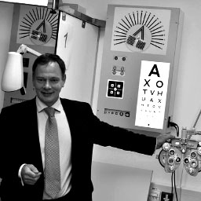

Experts directory: Engineering
 Dr Person One
Dr Person One
Lecturer in Digital Communication One
- Multimedia communications
- Digital rights management
- Video and image processing
- Data compressing
- Wireless error correction
- Engineering - software
 Dr Person Two
Dr Person Two
Lecturer in Digital Communication Two
- High performance graphics
- Computer games development
- Computer software - DirectX and OpenGL
- Mobile app development
- Software engineering
Dr Person Three
Lecturer in Digital Communication Three
- Materials engineering
- Structural integrity
- Corrosion protection
 Dr Person Four
Dr Person Four
Lecturer in Digital Communication Four
- CognitiveRobotics
- Artificial intelligence
- Reinforcement Learning
- Assisted living and care
- Teleoperation
- Biologically inspired systems
- Artificial Neural Networks
- Robot Software Engineering
Mr Person Five
Lecturer in Digital Communication Five
- Marine renewable energy
- Marine engineering
- Marine propulsion and hydrodynamics
- Computational fluid dynamics
Dr Person Six
Lecturer in Digital Communication Six
- Engineering problem solving
- Engineering creativity
- Engineering entrepreneurship
 Dr Person Seven
Dr Person Seven
Lecturer in Digital Communication Seven
- Civil engineering management
- Project management
- Contract management
- Disaster management
- Philosophy of engineering
Dr Person Eight
Lecturer in Digital Communication Eight
- Materials failure
- Failure analysis
- Marine technology
- Manufacturing engineering
- Boat and yacht surveying
- Welding, Adhesive and joining technologies
Mrs Person Nine
Lecturer in Digital Communication Nine
- Computational fluid dynamics
- Fluid structure interaction
- Marine renewable energy
Dr Person Ten
Lecturer in Digital Communication Ten
- Natural ventilation
- Carbon capture and storage
- Solution mining
- Sea ice mechanics
- Iceberg melt processes
- Evaporite geology
Dr Person Eleven
Lecturer in Digital Communication Eleven
- Women in engineering
- Gender and technology
- Leadership and management
Miss Person Twelve
Lecturer in Digital Communication Twelve
- Coastal engineering
- Harbour engineering
- Marine renewable energy
- Port structures
Dr Person Thirteen
Lecturer in Digital Communication Thirteen
- Computational fluid dynamics (CFD)
- Engineering design
- Educational research
- ICT (in education)
- Secondary schools
- Teacher education
Dr Person Fourteen
Lecturer in Digital Communication Fourteen
- Structural integrity
- Failure analysis
- Material properties
- Welding
- Residual stresses
- Fatigue and fracture
Dr Person Fifteen
Lecturer in Digital Communication Fifteen
- Cyber security
- Maritime Cyber Threats
- Hardware verification
- Analogue verification
- Trustworthiness of Complex Systems
- Software development
- CAD tools
- Formal methods
Dr Person Sixteen
Lecturer in Digital Communication Sixteen
- Unmanned marine vehicles
- Artificial intelligent techniques
- Marine renewable energy
- Engineering - industrial control Systems
- Engineering - design processes
Dr Person Seventeen
Lecturer in Digital Communication Seventeen
- Engineering-interdisciplinary design
- Operations management
- Project management
- Industrial control systems
- Building management systems
- Life cycle design
Dr Person Eighteen
Lecturer in Digital Communication Eighteen
- Composite materials
- Composites engineering
- Composite structures
- Composites manufacture
- Life cycle assessment
- Sustainable materials
- Microstructural characterisation
- Non-destructive testing